Ricostruzione degli eventi
La sera della strage sono presenti vari aerei militari e altri sconosciuti a nord di Bolsena e intorno al DC-9 Itavia.
Alcune evidenze oggettive consentono di dedurre che questi aerei possano aver creato o contribuito a creare i presupposti per abbattere l'IH870 secondo un piano ben congegnato, con il fine di addossare la colpa dell'accaduto ad un MiG libico e, quindi, a Gheddafi.
Tra le evidenze più significative si possono elencare:
- sequenza delle azioni compiute da alcuni aerei nel nord Italia;
- ritardo di circa 20 minuti per il decollo dell'IH870 attribuito ad insussistenti ragioni di traffico;
- spegnimento delle sole radioassistenze civili situate lungo la rotta del DC-9.
Sebbene la presenza di aerei introno al DC-9 sia oggettivamente dimostrata a nord di Bolsena, non si può dire la stessa cosa relativamente al momento dell'abbattimento, quando i tabulati radar non mostrano aerei intorno al DC-9 per un raggio di circa 60 nm. È, tuttavia, di fondamentale importanza capire che il mancato rilevamento di aerei da parte dei radar non implica la certezza dell'assenza di aerei. Per sfatare questo infondato luogo comune si raccomanda caldamente di consultare la pagina "I radar «vedono» tutto".
Lo scopo di questa ricostruzione è mettere in sequenza i fatti significativi di quella sera, indicando l'identità dei soggetti coinvolti, cosa hanno fatto e perché lo hanno fatto.
Benché i fatti qui esposti siano basati su evidenze oggettive (come di consueto) e non su racconti o testimonianze inverificabili, tali evidenze oggettive non sono sufficienti per stabilire l'identità di tutti gli aerei né perché abbiano compiuto determinate azioni. È, quindi, indispensabile fare ricorso ad un significativo numero di ipotesi (contrariamente a quanto avviene nel resto del sito). Sarà comunque mantenuta la regola del sito che impone la chiara identificazione di ogni ipotesi come tale, evitando che possa essere ritenuta una certezza.
Una ricostruzione, per quanto possa far uso di ipotesi, deve obbligatoriamente:
- essere compatibile con tutti gli elementi oggettivi (molti dei quali sono riportati nelle varie pagine del sito);
- essere composta da una sequenza logica di eventi tutti coerenti tra loro;
- basarsi sulle effettive prassi operative in uso all'epoca della strage.
Purtroppo, tali requisiti di buonsenso e di correttezza etica vengono sovente disattesi; ciò che ne risulta sono romanzi di fantasia privi di qualunque contatto con la realtà.
L'esempio più eclatante di ricostruzioni prive di fondamento è rappresentato da tutte quelle teorie che prevedono una battaglia aerea. Infatti, prendendo atto di ciò che è oggettivamente dimostrabile in merito alle autorizzazioni regolarmente concesse agli aerei militari libici (v. "Presenza del MiG-23 → Autorizzazioni ad aerei non NATO") e dell'assenza di qualsivoglia evidenza oggettiva che possa sostenere la teoria della battaglia aerea, è evidente che tale teoria è assolutamente ed oggettivamente incompatibile con la realtà dei fatti.
In questa pagina, al contrario, non è presente un fantasioso romanzo volto ad attrarre l'attenzione dei visitatori con avvincenti battaglie aeree e MiG che entrano di soppiatto nello spazio aereo italiano. Si leggerà, invece, una sequenza di avvenimenti sicuramente meno avvincente di un romanzo di fantasia, ma che in compenso rispetta i tre elementi di buonsenso elencati poco più sopra.
Nella presente ricostruzione si considera che il MiG-23MS rinvenuto a Castelsilano ufficialmente venerdì 18 luglio 1980 (21 giorni dopo l'abbattimento del DC-9), sia in realtà caduto la sera della strage.
Ciò è in parte giustificato anche dalle "sviste" del SISMI e dello SMA, che indicano il 14 luglio come data di ritrovamento del MiG, dando adito a dubbi sulla data dell'effettivo ritrovamento.
Si vedano, ad esempio, le precisazioni dello SMA emesse ad agosto del 1981 in merito ad articoli di stampa e ad altre "voci" circolanti nei mesi successivi alla strage (v. "WP001512_001.DOC"
fonte, metà della prima pagina):
4. INCIDENTE MIG23 LIBICO
SI TRATTAVA DI VELIVOLO MIG23 E NON MIG.25
I RISULTATI DELL'INCHIESTA HANNO POTUTO STABILIRE CHE L'INCIDENTE DEL 14.07.80
E' AVVENUTO PER UN MALESSERE DEL PILOTA E CERTAMENTE NON NEL CORSO DI UNA
MISSIONE DI RICOGNIZIONE PER VALUTARE LA CAPACITA' DELLA D.A. ITALIANA.
TRA L'ALTRO E' DA RILEVARE CHE IL VELIVOLO IN QUESTIONE CON LA CONFIGURAZIONE,
ADOTTATA PER IL VOLO DEL 14 LUGLIO, NON AVREBBE AVUTO AUTONOMIA SUFFICIENTE PER FAR RIENTRO IN LIBIA.
e inoltre (v. "WP001405_001.DOC"
fonte, pag. 9):
GIUDICE PRIORE: COMUNQUE IL 14 LUGLIO E' STATO LASCIATO UNO SPAZIO IN BIANCO,
QUINDI E' STATA FATTA UNA BELLA RICERCA, E' STATO CANCELLATO, E' STATO MESSO IN
UN MOMENTO SUCCESSIVO, E QUINDI IN UN CERTO SENSO LA DATA 14 LUGLIO, DAL MODO IN
CUI VIENE COLLOCATA, IN CUI VIENE CORRETTA, DA' MODO INVECE DI RITENERE ALMENO
ALLO STATO CHE SIA STATA MESSA NON ERRANDO. PER QUALE RAGIONE DOVREBBE AVERE
ERRATO IL DATTILOGRAFO O LEI O CHI PER LEI HA MESSO QUELLA DATA 14 LUGLIO? QUI
C'E' SCRITTO A CHIARE LETTERE, E' STATO LASCIATO LO SPAZIO PROPRIO PER ANDARE A
VEDERE IN ALTRE CARTE LA DATA. E LA DATA E' STATA MESSA 14 LUGLIO.
Insomma, sembra che la data del ritrovamento sia fittizia e concordata a tavolino in un secondo tempo.
Questa pagina è l'equivalente in formato testo (con qualche miglioria) del video in tre parti che ho caricato su YouTube. La differenza è che qui si scende in un dettaglio maggiore e che questa pagina sarà revisionata ogniqualvolta se ne presenterà la necessità.
Gli orari sono riportati in UTC (o zulu), sono quindi 2 ore indietro rispetto all'orario locale.
Gli orari presenti nel tabulato di Poggio Ballone sono risincronizzati con quelli di Ciampino (v. "Volo in A-14 → Sfasamento temporale tra Ciampino e Poggio Ballone").
INDICE
Presentazione dell'ipotesi
Per facilitare la comprensione dell'ipotesi qui presentata, seguono due tabelle riepilogative, utili per introdurre i soggetti coinvolti in questa brutta storia e spiegare brevemente come ne entrano a far parte.
| Soggetto | Descrizione |
| IH870 | DC-9 Itavia del volo Bologna - Palermo. |
| IH779 | Fokker F28 Itavia del volo Bergamo - Ciampino. |
| MiG-23MS | Finto responsabile dell'abbattimento dell'IH870 sul quale addossare la responsabilità dell'accaduto. |
| PD-808 | Verifica la portata del VOR di Firenze. |
| MIX 432 | Missione d'addestramento con Naldini e Nutarelli + Giannelli del tutto irrilevante per la strage di Ustica. |
| MIX 433 | Caccia operativo usato per scortare il MiG; sostituisce la missione d'addestramento con Bergamini e Moretti. |
| AWACS | Coordina gli aerei nella zona Bologna - Firenze. |
| Intercettore | Abbatte l'IH870. |
La seguente tabella riepiloga la sequenza delle azioni compiute dai vari aerei.
| Orario | Soggetto | Azioni compiute |
| 17:15 | PD-808 | Decolla da Pisa e orbita intorno alla radioassistenza di Firenze per verificarne la portata mentre qualcuno ne sta regolando la potenza di trasmissione. |
| 17:30 | MIX 432 | Decolla da Grosseto la missione d'addestramento con Naldini e Nutarelli in un aereo e l'allievo Giannelli nell'altro. Questa missione è del tutto irrilevante per la strage di Ustica. |
| 17:40 | MIX 433 | Questa missione d'addestramento viene sostituita da un volo operativo che decolla da Grosseto per scortare il MiG-23 che si sta preparando per decollare da Villafranca. |
| 17:50 | IH870 | Riceve la comunicazione che la sua partenza sarà ritardata di 20 minuti per ragioni di traffico (in realtà inesistente). |
| 18:08 | IH870 | Decolla da Bologna. |
| 18:10 | MiG-23MS | Decolla da Villafranca. |
| 18:13 | AWACS | E-2C che transita lungo l'aerovia Genova - Bologna, coordinando alcuni aerei militari in zona. |
| 18:20 | PD-808 | Affianca l'IH870 mentre sorvola la radioassistenza di Firenze e vi entra in formazione. |
| 18:22 | AA464 | Il caccia sostituto della MIX 433, vettorato dall'AWACS, entra in formazione col MiG per accompagnarlo fino all'IH870. |
| 18:24 | - | Vari aerei militari e due aerei Itavia (IH779 e IH870) confluiscono sulla radioassistenza di Firenze e s'immettono nell'aerovia Firenze - Bolsena. |
| 18:25 | MiG-23MS | Dopo aver lasciato AA464, arriva in coda all'IH779 che lo "accompagna" fino all'IH870. |
| 18:29 | PD-808 | Dapprima nascostosi tra i due voli Itavia, si distacca da questi e si va ad appiccicare al caccia che ha sostituito la MIX 433 (AA464). |
| 18:31 | PD-808 | Abbandona il caccia col quale era entrato in formazione alle 18:29 e si dilegua tra le colline a sud della Toscana. |
| 18:40 | Intercettore | Decolla da Decimomannu per abbattere l'IH870 nei pressi del punto CONDOR. |
| 18:44 | IH870 | Poco dopo del punto PUMA (all'altezza di Roma) si rende conto che le radioassistenze civili lungo la sua rotta sono spente. |
| 18:55 | - | La probabile presenza di aerei che accompagnano l'IH870 si manifesta come un'interferenza nei tabulati radar di Roma. |
| 18:58 | - | 35 km a sud-ovest dell'IH870 compaiono due plot che potrebbero indicare la presenza di un aereo che scende parallelamente al DC-9, ma potrebbero essere due falsi plot dovuti a disturbi ricevuti dal radar Marconi. |
| 18:59 | - | Il MiG si accoda all'intercettore che abbatte l'IH870 tramite due missili da esercitazione a testata inerte (non esplosiva). |
| 19:03 | - | Inizia il finto inseguimento del MiG da parte di caccia NATO fino alla zona semidisabitata di Castelsilano (come pianificato). |
| 19:05 | PD-808 | Atterra a Pratica di Mare. |
| 19:20 | MiG-23MS | Si schianta nel posto convenuto dopo aver volutamente terminato il carburante; ecco il colpevole! |
17:15 - PD-808
La storia di quel pomeriggio del 27 giugno 1980 comincia alle 17:15 con il decollo da Pisa di un PD-808 in forza al 14° stormo, di stanza a Pratica di mare (per tutti i dettagli v. "Volo in A-14 → PD-808 e LG461").
L'equipaggio riferisce che la missione di quel pomeriggio consisteva nel verificare la radioassistenza militare di Firenze (il TACAN). In particolare, l'allora cap. Ocone, capo equipaggio del PD-808, riferisce che dovevano compiere un'orbita intorno al TACAN a varie quote.
L'ipotesi è che questo aereo, in realtà, ronzasse intorno alla radioassistenza di Firenze (comprendente anche un VOR, oltre al TACAN) non per verificare il TACAN, ma per verificare la portata del VOR circa 30/40 minuti prima che passasse l’IH870.
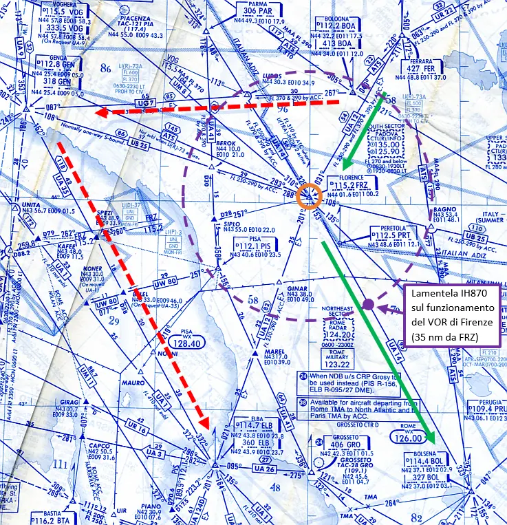
Il motivo è che se il VOR di Firenze fosse stato spento come le altre radioassistenze lungo la rotta (v. "
Stato delle radioassistenze"), il DC-9 avrebbe dovuto deviare per Genova, passando sull'Elba e ricongiungersi al piano di volo originario su Ponza, quindi cambiando completamente percorso, come mostrato dalle frecce rosse nella cartina. Ciò si sarebbe reso obbligatorio perché Milano 2 (ente competente fino al VOR FRZ) non aveva il radar (v. "
Controllo radar e procedurale").
Quindi l'ipotesi si basa sull'evidente necessità che qualcuno aveva di tenere spente tutte e solo le radioassistenze lungo la rotta pianificata dall'IH870, quale che ne fosse il motivo (per alcuni dei possibili motivi v. "
Stato delle radioassistenze → Cosa comporta la mancata disponibilità delle radioassistenze?").
Non potendo spegnere il VOR di Firenze, per le ragioni appena dette, ne hanno regolato la potenza di trasmissione in modo tale che fosse ricevuto fino alla distanza minima indispensabile per non deviare l'IH870 su Genova.
Non a caso, la lamentela dell'IH870 sullo stato del VOR ha luogo alle 18:26 (v. "
Comunicazioni T/B/T → Zig-zag verso Grosseto"), quando il DC-9 si trova ad appena 35 nm dal VOR.
Il cerchio tratteggiato mostra che la distanza di 35 nm comprende quasi esattamente Bologna, rendendo ancor più evidente l'oculata regolazione della potenza del VOR.
Per verificare la portata del VOR, non era indispensabile usare proprio un PD-808RM (versione "Radiomisure", dotato dell'apposita strumentazione per effettuare tali verifiche); sarebbe stato sufficiente un qualunque aereo dotato di un normale ricevitore VOR, per cui anche un PD-808GE (versione "Guerra elettronica", dotato, appunto, di un normale ricevitore VOR) sarebbe andato benissimo.
D'altro canto usare un aereo lento (a elica) avrebbe richiesto un tempo enorme per compiere alcune orbite, poiché un'orbita situata a 35 nm dal VOR ha una circonferenza di ben 220 nm. Era comunque necessario un
jet.
Ipotizzando un volo a quota medio-bassa, questo aereo poteva tenere una velocità al suolo media intorno ai 380 kn, per cui impiegava circa 30/35 minuti per compiere un'orbita.
Lo stralcio delle comunicazioni T/B/T qui di seguito riportato è estratto dal "TITOLO 2 - L’istruttoria dal 27 luglio 90 al 31 dicembre 97.", pag. 281 ed evidenzia la lamentela dell'IH870 (preceduta da quella dell'IH779 Bergamo - Ciampino):
18.26.06
Roma : 870 identifichi.
IH870: arriva.
Roma : ok, è sotto radar, vediamo che sta andando verso Grosseto, che prua ha?
IH870: la 870 è perfettamente allineato sulla radiale di Firenze, abbiamo 153 in prua
ci dobbiamo ricredere sulla funzionalità del VOR di Firenze.
Roma : sì, in effetti non è che vada molto bene.
IH870: allora ha ragione il collega.
(Nota: il volo IH779 si era in precedenza lamentato del funzionamento delle radioassistenze di Firenze e Bolsena).
Roma : sì, sì, pienamente.
Lo stato estremamente insolito ed ambiguo in cui si trovava il VOR di Firenze è indirettamente confermato dall'elenco dello stato di efficienza delle radioassistenze riportato a pag. 27 della relazione Luzzatti.
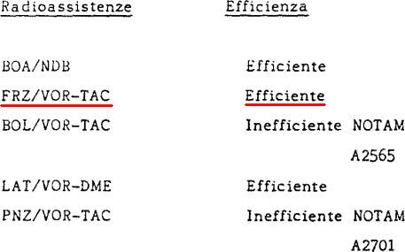
Il fatto che questo VOR venga riportato come efficiente, quando, invece, è una certezza che è malfunzionante, costituisce un ottimo supporto per l'ipotesi che la radioassistenza sia stata oculatamente regolata per funzionare a bassa potenza solo per poco tempo (1 o 2 ore), cioè per il lasso di tempo in cui è transitato l'IH870, più un margine di sicurezza al quale aggiungere un ulteriore margine per cercare di non rendere così evidente che il malfunzionamento era stato messo in atto per il passaggio dell'IH870.
Proprio a causa di questo breve tempo, non è stato nemmeno emesso un NOTAM, come invece è stato fatto per le altre due radioassistenze.
Bisogna precisare che l'inefficienza delle radioassistenze di Bolsena e Ponza, indicate nella relazione come "BOL/VOR-TAC" e "PNZ/VOR-TAC", comprende sia il VOR che l'NDB di entrambe, mentre i rispettivi TACAN funzionano (v. "
Stato delle radioassistenze").
Tornando al PD-808, ciò che si sa è che ha il nominativo radio Flyjet 56 e inizia ad essere rilevato dal radar Selenia alle 18:39:44, successivamente anche dal Marconi, quando si trova poco più a sud di Civitavecchia, ma molto distante dalla costa laziale (circa 50 km).
Data la rotta che potrebbe aver seguito dopo Firenze, questo aereo poteva trovarsi dalle parti di Grosseto intorno alle 18:30, orario piuttosto significativo (come si vedrà tra poco).
17:30 - MIX 432
Alle 17:30 decolla da Grosseto la missione d'addestramento MIX 432, composta da due TF-104G con gli istruttori Naldini e Nutarelli in un aereo e l'allievo Giannelli nell'altro e se ne vanno a fare la loro esercitazione per far impratichire Giannelli ad effettuare manovre evasive sfuggendo agli istruttori (v. "I due F-104").
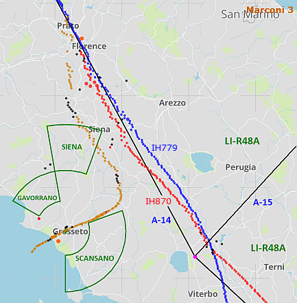
La cartina mostra le possibili zone di lavoro in cui si svolgevano quel tipo di esercitazioni (sono anche mostrati i plot dei due aerei Itavia e del caccia che li affianca).
Giannelli riferisce a Priore che le usuali zone in cui lui faceva le esercitazioni erano Gavorrano, Scansano o la ben più ampia LI-R48A.
Questi due aerei non compaiono nel tabulato di Poggio Ballone, in quanto i controllori della difesa aerea non hanno alcun interesse a tracciare i voli d’addestramento.
Questi due aerei non hanno alcuna rilevanza per la strage di Ustica.
17:40 - MIX 433
Per le 17:40 era previsto il decollo della missione d'addestramento MIX 433, che prevedeva un avvicinamento radar di precisione all'aeroporto di Villafranca.
L’istruttore Bergamini doveva verificare l’operato dell'allievo Moretti tramite l’osservazione delle indicazioni degli strumenti replicati nei due cockpit (anteriore e posteriore). Era quindi necessario che i due piloti si trovassero nello stesso aereo, ciò significa che questa missione era certamente composta da un solo aereo.
Riveste notevole importanza sottolineare il totale disinteresse mostrato dai piloti nel pianificare questa missione, come emerge dalle lunghe telefonate tra Jerry Controllo e Roma (v. "I due F-104 → Dubbi sulla MIX 433").
Tale palese disinteresse ben supporta l'ipotesi che la missione possa essere stata sostituita, senza farlo sapere a troppa gente, con un caccia operativo (non d’addestramento) che ha seguito lo stesso piano di volo previsto per la MIX 433.
Lo scopo della sostituzione di missione è scortare o guidare un aereo da Villafranca fino all’IH870 (che sta per decollare da Bologna) senza che nessuno si accorga della sostituzione.
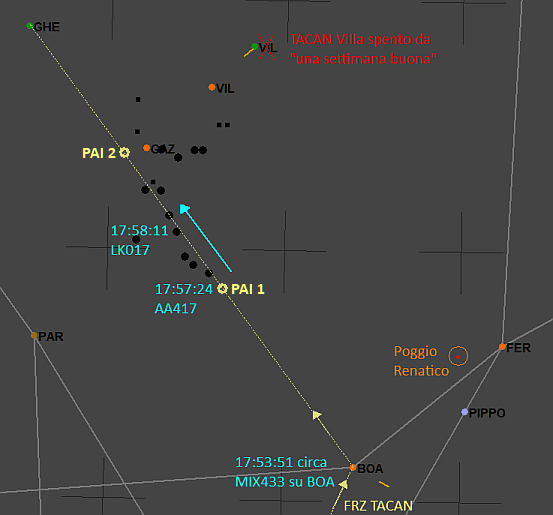
Alle 17:57:24 compare il primo plot di questo aereo nel tabulato di Poggio Ballone (che secondo questa ipotesi è AA417/LK017).
In circa 20 minuti, LK017 ha compiuto circa 150 nm; velocità ampiamente compatibile con quella di un caccia (circa 450 kn).
La cartina mostra anche la probabile posizione dei due
PAI, situati a 20 nm e a 40 nm dal TACAN di Ghedi.
Questi due punti d'avvicinamento basati sul TACAN di Ghedi dovevano essere utilizzati al posto di quelli basati sul TACAN di Villafranca, poiché questo era in avaria da più di una settimana (fatto piuttosto anomalo).
Questo aereo inizia presto a rispondere ai radar secondari della difesa aerea con SIF di modo 1 uguale a 73. Il collegio peritale Dalle Mese ipotizza che ciò sia stato fatto dal pilota per segnalare la propria posizione (v. Ordinanza-Sentenza, "Capitolo LXXXVII - Perizia radaristica Dalle Mese ed altri - 16.06.97.", pag. 46):
LK017 Friend - E’ velivolo militare per codici identificativi. Presente in
THR dalle 18.00.12; si presenta anche con nominativo AA e LE quando
ritrasmessa da Ferrara. Il SIF1 è 73 per un paio di battute: l’attivazione
dell’emergenza potrebbe essere dovuta da parte del pilota per segnalare la
propria posizione (emergenza non confermata).
In effetti, questa modalità usata per segnalare la propria posizione con SIF1 = 73 per uno o due giri d’antenna era normale prassi. Così facendo, i controllori militari (non quelli civili) vedevano sul loro schermo il simbolo dell’aereo ben evidenziato. Bisogna definitivamente togliersi dalla testa che questa prassi d’impostare il 73 nel modo 1 per 20/30 secondi potesse indicare un’emergenza (v. "RADAR e SIF → Codice 73 del SIF di modo 1").
17:50 - IH870
Poco prima delle 17:50, l’IH870 riceve dalla torre di Bologna la comunicazione che la partenza sarà ritardata di una ventina di minuti per ragioni di traffico. La circostanza viene confermata dall'ex capitano dell'aeronautica militare Ciancarella (v. "Comunicazioni T/B/T → Svolgimento del volo").
Osservando i tabulati radar si può appurare oggettivamente che non c’è alcun traffico che possa richiedere di ritardare la partenza dell’IH870; anzi, proprio a causa di questo ritardo, il DC-9 si ritroverà tra i piedi il collega dell’IH779 che gli bloccherà la salita per oltre 20 minuti.
Alle 18:08, l’IH870 decolla dalla pista 12.
18:13 - AWACS
Alle 18:13:40 appare LE207 lungo l’aerovia G-7 Genova-Bologna a bassa velocità (220-250 kn) e alla quota minima permessa in quell’aerovia (livello di volo 110).
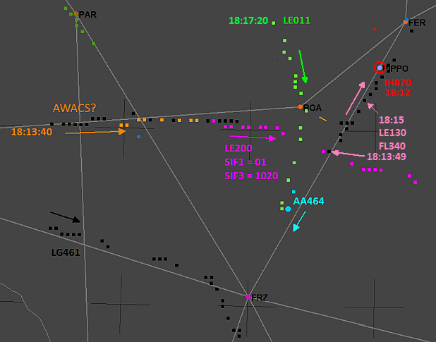
Dopo circa 3 minuti, questa traccia compare come LG521 e attiva il transponder rispondendo con SIF1 = 10, forse per indicare ai radaristi che in quel momento l'aereo è entrato in servizio; quale servizio? Quello d’assistenza agli aerei militari presenti in zona, perché questo è quasi certamente un AWACS E-2C, probabilmente decollato da una portaerei nel Tirreno (va precisato che la presenza di un AWACS non è dimostrabile).
Sfruttando il modello meteo, è possibile calcolare con sufficiente precisione la velocità rispetto all'aria di questo aereo. Ciò permette di poter verificare la compatibilità di questo aereo con un E-2C. Infatti, se la velocità all'aria corrispondente ai 220 kn rispetto al suolo (velocità rilevata dai radar) dovesse risultare troppo bassa, la compatibilità di LE207 con un E-2C sarebbe dubbia o priva di fondamento.
Il modello meteo dà una quota di circa 11100 ft sul livello del mare (corrispondente, con il meteo presente in quel momento, al livello di volo 110) e un vento da 325° a 21,5 kn, per cui la velocità rispetto all'aria (velocità calibrata o CAS) è pari a 174 kn.
Considerando che un aereo in volo livellato può solitamente mantenere una qualunque velocità compresa tra quella di stallo e quella massima di crociera, per l'E-2C abbiamo un intervallo di velocità all'aria da circa 75 kn a 340 kn (v. "E-2 TECHNICAL DATA"), ma non sono queste le velocità da considerare; sarebbe, infatti estremamente insolita anche una CAS di 100 kn.
Dal momento che abbiamo la fortuna di avere i dati dell'aereo che riportano anche la velocità d'avvicinamento (alla pista d'atterraggio), è molto più significativo prendere questa come riferimento: 103 kn.
La velocità all'aria di 174 kn è ampiamente superiore a quella d'avvicinamento ed è pertanto quasi una certezza che questa velocità possa essere tenuta in configurazione "pulita" (senza flap) e che ricada nel 1° regime di volo (quello di normale crociera).
La velocità tenuta da questo aereo è, quindi, compatibile con un E-2C.
Proprio questa velocità e la bassa quota rendono, invece, estremamente innaturale l’assegnazione della traccia ad un E-3 (troppo spesso nominato senza cognizione di causa).
18:14 - LE011
Alle 18:14:29 compare LE011 (traccia inizializzata da Poggio Renatico, distante circa 35 miglia dall'aereo). L'ipotesi è che questo aereo sia il MiG-23MS completamente disarmato decollato da Villafranca circa 2 o 3 minuti dopo il decollo dell’IH870 (per tutti i dettagli v. "Presenza del MiG-23").
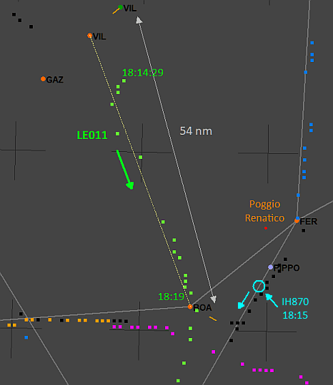
Come ha fatto un caccia libico ad atterrare in Italia senza problemi? La cosa più semplice è che la Libia possa aver chiesto al Ministero degli Affari Esteri regolare autorizzazione per far atterrare il MiG nell’aeroporto di Villafranca per un cosiddetto scalo tecnico, chiamato
cross-servicing in ambito NATO.
Lo scalo ha il duplice scopo di rifornire il MiG fino all’orlo e di poterlo far partire da un aeroporto molto vicino a Bologna, consentendo un sincronismo migliore tra tutti gli aerei facenti parte del convoglio che si riverserà nell'A-14 insieme all’IH870.
Alle 18:15 l'IH870 si trova ancora a nord di Bologna, dopo aver fatto l'inversione di rotta sul punto PIPPO per reimmettersi nell'aerovia A-12 e sta scendendo verso il VOR di Firenze (v. "
Comunicazioni T/B/T → 2) Ingresso in A-12").
18:20 - LG461
Sappiamo dalle TBT che alle 18:20 l’IH870 sorvola il VORTAC di Firenze.
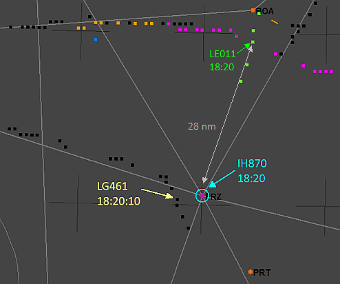
Anche il misterioso LG461, lungo l’aerovia B-25 Genova-Firenze, sta confluendo nell'A-14 senza nemmeno aspettare di avvicinarsi ancora un po’ al VORTAC di Firenze; sembra che la sua unica preoccupazione sia di affiancarsi all’IH870, accelerando per mantenere il passo.
Il modo in cui LG461 varia la velocità all’approssimarsi al VORTAC di Firenze, iniziando già da quando si trova a circa 70 km dal DC-9, lascia ipotizzare che possa essere uno degli aerei guidati dall’AWACS.
L'ipotesi che qui viene fatta è che LG461 sia il PD-808 che orbitava intorno alla radioassistenza di Firenze.
18:21 - AA464
Alle 18:21 appare AA464 che sta correndo per entrare in formazione con il MiG (LE011); la velocità relativa tra i due aerei è circa 80 kn.
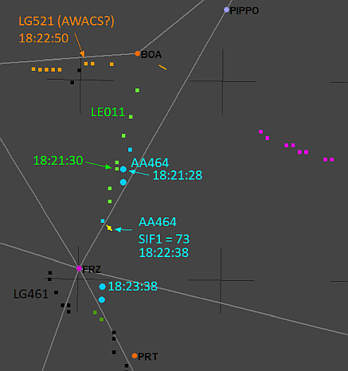
Dopo 1 minuto, i due aerei formano un unico plot, in quanto sono entrati in formazione stabile.
AA464 segnala all’AWACS questo fatto trasmettendo il codice 73 nel SIF di modo 1 per un giro d’antenna.
Si sottolinea nuovamente che il codice 73 non ha niente a che vedere con la bufala dell’allarme generale.
La coppia passa il VORTAC di Firenze 3 minuti dopo dell’IH870, che nel frattempo ha formato un’altra coppia con LG461 (il PD-808).
Intorno alle 18:23/18:24, il MiG potrebbe essersi "sganciato" da AA464 per farsi dare un passaggio dall’IH779 (Fokker 28 Itavia del volo Bergamo-Ciampino), circa 8 km più avanti. Il MiG vede bene le luci di navigazione dell’IH779.
Sembrerebbe che il ritardo di 20 minuti nel far decollare l'IH870 non sia stato sufficiente per sincronizzare LE011 con il DC-9, ma l’errore è stato comunque molto piccolo (2 o 3 minuti).
18:24 - La confluenza
Finalmente, alle 18:24:32, l’IH870 compare sugli schermi di Roma Radar.
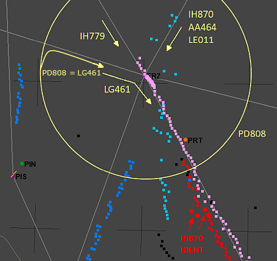
Grazie al fasullo ritardo ATC di circa 20 minuti, abbiamo un ammasso di ben 5 aerei (IH870, IH779, LE011, AA464 e LG461), più altri 2 transitati a nord di Firenze.
Poco dopo delle 18:26, il controllore di Roma Radar chiede all’IH870 d’identificarsi e il primo ufficiale preme il pulsante IDENT nel pannello del transponder. Ciò evidenzia i plot dell'aereo per una trentina di secondi. Il controllore sta infatti osservando un ammasso indecifrabile di ritorni radar derivanti dall’ammucchiata di 4 aerei molto vicini tra loro.
Sullo schermo si vedono solo i due aerei Itavia, ma sappiamo che nel mucchio c’è anche LE011 e LG461.
In questo momento, AA464 si trova circa 13 km a ovest dall’IH870 in allontanamento e dopo circa 1 minuto inizia il volo in parallelo al convoglio, ad una distanza di circa 18 km.
18:29 - Schizza via!
Alle 18:29, uno dei due aerei nascosti dagli altri due aerei Itavia schizza via dall’IH870 non appena questo inizia la salita dal livello di volo 230 al livello di crociera e si va ad appiccicare ad AA464.
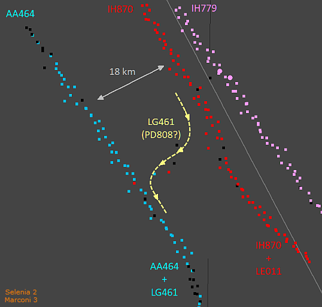
Si può ipotizzare che questo aereo possa essere il PD-808 (LG461), mentre il MiG (LE011) continua a seguire il DC-9 stando 2000 ft più in basso e senza allontanarsi più di 2 km di distanza orizzontale (per rimanere nascosto ai controllori di Roma).
Il caso vuole che questo orario corrisponda quasi esattamente all’orario centrale del buco temporale di circa tre minuti e mezzo presente nel tabulato di Poggio Ballone consegnato all’autorità giudiziaria.
C’era forse qualcosa da nascondere? A giudicare dallo scambio d’aereo sembra proprio di sì e Poggio Ballone avrebbe consentito di osservare molto bene la scena fino a bassissima quota, data la modesta distanza dai due aerei (appena 30/35 nm).
18:31 - AA041
Alle 18:31:45 si assiste allo sdoppiamento della traccia LL464 (era AA464) che fa nascere AA041.
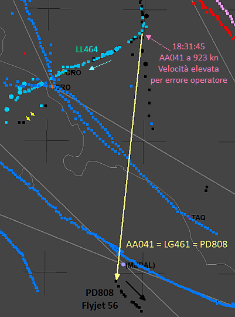
AA041 si dilegua tra le colline a sud della Toscana, mentre LL464 continua l’avvicinamento a Grosseto.
Avendo fatto l’ipotesi che sia stato LG461 ad appiccicarsi ad AA464, ne consegue che AA041 è sempre LG461.
La velocità di AA041 è molto elevata, circa 920 kn. Ciò potrebbe essere dovuto ad un errato posizionamento del cursore da parte dell'operatore in fase d'inizializzazione della traccia.
In tal caso, cioè ignorando la velocità, AA041 può essere attribuita molto facilmente al PD-808 (Flyjet 56) che ritroveremo al largo della costa laziale (come già detto), in discesa lungo l’A-1 a bassissima quota.
18:39 - "4 3 3 squocchi flash"
Alle 18:39:42, LG403 (era AA464) risponde al radar secondario di Poggio Ballone con i due famosi 73 del SIF di modo 1 per due giri d’antenna consecutivi; come mai? Semplice e banale: per indicare la posizione al controllore della torre di Grosseto su sua richiesta: "4 3 3 squocchi flash".
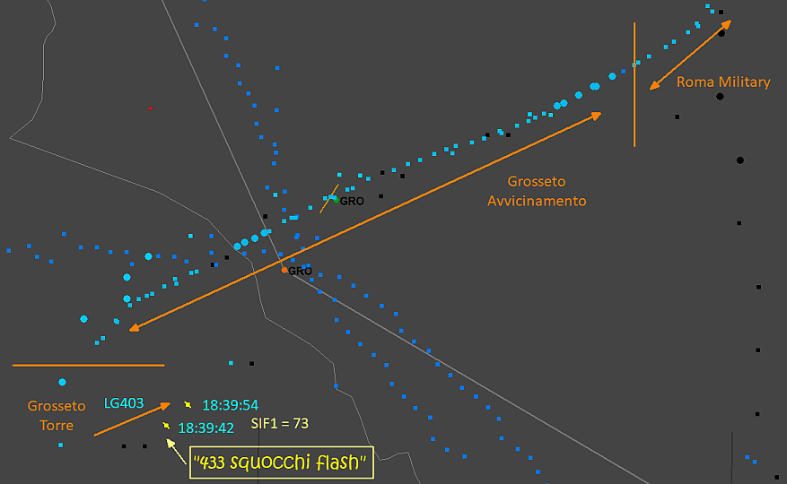
La cartina mostra gli enti di controllo che hanno in carico l'aereo durante il suo avvicinamento a Grosseto.
Inizialmente il caccia è sotto il controllo di Roma Military (l'omologo militare di Roma Radar). Poi il controllore lo passa a Grosseto Avvicinamento, il quale gli chiede d'impostare 5400 nel SIF di modo 3 e d'identificarsi (premendo I/P nel pannello IFF).
Una volta completata l'inversione di rotta per allinearsi alla pista, il controllore d'avvicinamento passa l'aereo alla torre. Quest'ultimo controllore chiede al pilota di squoccare il flash per essere sicuro che l'aereo sia proprio quello e, quindi, dargli tutta l'assistenza e le autorizzazioni necessarie per atterrare.
Il pilota esegue l’ordine ruotando le due manopole del modo 1 da un fine corsa (00) all’altro (73).
Basterebbe un solo giro d’antenna con il flash, ma siccome il pilota è indaffarato a configurare l’aereo per l’atterraggio, dà precedenza a questa operazione, lasciando le due manopole su 73 per una trentina di secondi, invece di una ventina.
Il flash precedente (quello trasmesso alle 18:22:38) è presente per un solo giro d’antenna per due possibili motivi:
- il pilota non è indaffarato, dal momento che è in crociera ed ha, quindi, tempo da dedicare all'IFF;
- il plot successivo di AA464 ricompare dopo 1 minuto, per cui il pilota potrebbe aver lasciato le manopole su 73 per un minuto (5 giri d’antenna), ma non avrebbe alcun senso, perché se c’è un’emergenza (non un inesistente "allarme generale"), il pilota ruota la manopola principale su "EMERGENCY" e la lascia in quella posizione per tutta la durata dell’emergenza. Se, invece, è solo un flash di segnalazione, il pilota ruota le due manopole su 73 e le lascia in posizione per una ventina di secondi, poi le rimette su 00 o inibisce le risposte di modo 1 (per inciso, nel 1980 né gli F-104S né i TF-104G potevano inibire le risposte di modo 1).
18:40 - Decollo intercettore
Il posto ideale dal quale far decollare l'intercettore che doveva abbattere l'IH870 era certamente Decimomannu, sia per la posizione che per il continuo viavai di aerei difficilmente controllabile (v. "WP001293_001.DOC"
fonte):
LA BASE A.M. DI DECIMOMANNU NON ERA, NEL 1980 NE' LO E' TUTTORA, SEDE DI ALCUNO
STORMO O GRUPPO DI VOLO.
TALE SITO VIENE ESCLUSIVAMENTE UTILIZZATO PER RISCHIERAMENTI ED ESERCITAZIONI AI
TIRI PRESSO POLIGONO LIMITROFI DA FORZE AEREE NAZIONALI ED INTERNAZIONALI.
IN PROPOSITO SONO STATI STIPULATI NUMEROSI ACCORDI CON ALCUNI PAESI STRANIERI
SUL CO-USO DELLA BASE E DEI POLIGONI ASSOCIATI AD ESSA.
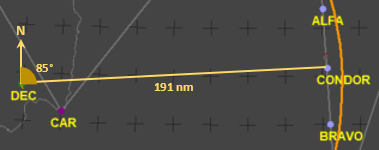
Lungo la rotta seguita dall'IH870, il punto ideale per abbattere la malcapitata vittima era sicuramente il punto CONDOR, in quanto si trovava al limite della portata dei vari radar presenti in zona.
Il caccia, quindi, avrebbe potuto seguire la
radiale 85 del TACAN di Decimomannu fino ad arrivare nei pressi del punto CONDOR.
Lo stesso percorso poteva essere seguito anche con un
INS.
L'arco di cerchio passante nei pressi dei tre punti di riporto ha un raggio di 200 nm e rappresenta la portata minima solitamente assicurata da un TACAN.
Siccome la ricostruzione prevede l'ipotesi di "Abbattimento tramite missili inerti", l’utilizzo degli AIM-7C fa ricadere la scelta dell’intercettore su un F-4 o un F-15. Un F-104S, con il suo arcaico radar di tiro, appare meno probabile.
La documentazione acquisita dall'AG evidenzia, per il giorno del disastro, la presenza di tali tipi di caccia nella base di Decimomannu (v. ancora "WP001293_001.DOC"), ad esempio:
GERMANIA
DURANTE IL MESE [giugno 1980, ndr]
HA RISCHIERATO:
- NR. 42 F104 - CON NR. 50 PILOTI;
- NR. 20 F4 - CON NR. 23 PILOTI;
- NR. 03 UH-1D - CON NR. 03 PILOTI.
TALI VELIVOLI RISULTANO AVER EFFETTUATO NR. 27 SORTITE NOTTURNE PER UN TOTALE DI
H. 21,45 EFFETTUATE CON VELIVOLI TIPO F104 E NR. 19 SORTITE NOTTURNE EFFETTUATE
CON ELICOTTERI UH-1D PER UN TOTALE DI H. 10,10.
NON E' STATO POSSIBILE RINVENIRE LE DATE IN CUI SONO STATE EFFETTUATE TALI
MISSIONI NE' I RELATIVI PIANI DI VOLO.
[...]
STATI UNITI
SONO STATI RISCHIERATI I SEGUENTI VELIVOLI:
- NR. 6 F5 CON NR. 7 PILOTI
- NR. 5 F15 CON NR. 8 PILOTI
NON RISULTANO AVERE EFFETTUATO ATTIVITA' NOTTURNA.
IL 27.06.80 RISULTANO AVER EFFETTUATO RIFORNIMENTO NR. 23 VELIVOLI TIPO F5 E
F15; TUTTAVIA IN NESSUN REGISTRO SI RINVENGONO ULTERIORI INDICAZIONI SU TALI AA/MM.
L'elenco dei 23 velivoli è riportato nel documento "WP017920_019.DOC"
fonte; eccone un estratto:
BASE AEREA DECIMOMANNU
LINEA AMERICANA DECIMOMANNU, LI' 27.06.80
ORA TIPO TIPO MATRICOLA TOTALE FIRMA DEL FIRMA PER
RIF. CARB/TE AEREO AEREO LITRI CARB/STA RICEVUTA
[...]
17,05 " F15 76043 4620 SAVASTANO INCOMPR.
" " " 75075 5140 SAVASTANO INCOMPR.
17,15 " " 76036 5600 SAVASTANO INCOMPR.
" " " 76016 6250 SAVASTANO INCOMPR.
17,25 " " 76050 5900 SAVASTANO INCOMPR.
" F/5 1547 1360 INCOMPR. INCOMPR.
" F15 048 5750 INCOMPR. INCOMPR.
Ad un orario prestabilito bisognava dare l'ordine di decollo all'intercettore.
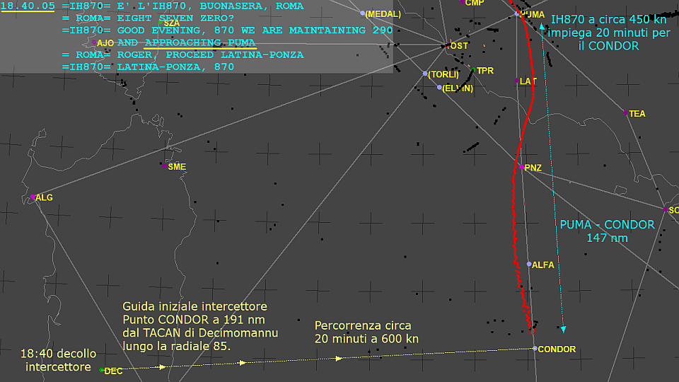
In sede di pianificazione, questo orario poteva essere calcolato basandosi sulle velocità dei due aerei (intercettore e DC-9) e sullo spazio da percorrere.
Il caccia deve volare non troppo alto, per l'ovvia necessità di non farsi rilevare dai radar; si potrebbe ipotizzare una quota di circa 20000 ft. Considerando il forte vento da ovest, una velocità al suolo di 600 kn è ragionevole (equivale a circa 530 kn rispetto all'aria o mach 0,84, niente di eccezionale).
Il tempo necessario al caccia per arrivare all'appuntamento si calcola facendo 191 / 600 x 60 = 19,1 minuti.
Un aereo di linea come il DC-9 vola in crociera normalmente a circa 450 kn rispetto all'aria (dato il vento quasi al traverso, la velocità al suolo è quasi uguale a quella all'aria). Quindi, in 19 minuti il DC-9 percorre circa 450 x 19 / 60 = 142,5 nm.
Con questi dati, ciò che si ha a disposizione per determinare l'istante di decollo dell'intercettore è il riporto
obbligatorio del PUMA, dal quale il CONDOR dista 147 nm. Quindi, nel momento in cui l'IH870 riporta
obbligatoriamente il PUMA al controllore di Roma Radar, l'intercettore ha circa 19,6 minuti per arrivare al CONDOR, con una velocità al suolo media di 585 kn (circa mach 0,82).
Dalle comunicazioni T/B/T, l'IH870 riporta il PUMA quando si trova a circa 6 nm da esso, intorno alle 18:40:10: "GOOD EVENING, 870 WE ARE MAINTAINING 290 AND
APPROACHING PUMA".
Questo tipo d'intercettazione avviene seguendo un arco di cerchio massimo (o, più semplicemente, in linea retta) ed è, quindi, la più efficiente possibile, oltre ad essere la più semplice da calcolare. Tuttavia, non potendo contare sul fatto che l'IH870 mantenga una velocità al suolo costante, l'intercettore ha bisogno di qualcuno che gli consenta di arrivare nei pressi del CONDOR in sincronismo con il bersaglio.
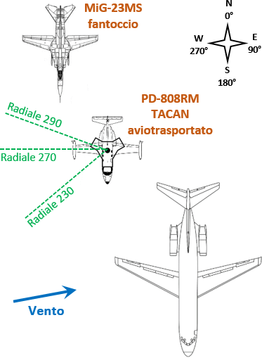
Considerando la ragionevole necessità di ridurre al minimo indispensabile il coinvolgimento di personale in tutta questa faccenda, in coda al DC-9 ci doveva essere anche un aereo dotato di TACAN aviotrasportato, alla stregua di un normale TACAN terrestre. Questo aereo guida poteva essere un caccia NATO o un PD-808RM.
Oltre all'aereo guida, c'era anche il MiG "fantoccio" che doveva far finta di abbattere il DC-9. Questi due aerei dovevano volare in coda al DC-9 ad una distanza compresa tra i 500 metri e i 2 chilometri per non essere rilevati da Roma Radar.
In teoria, l'intercettore poteva essere guidato da un normale guidacaccia come, ad esempio, una portaerei nel tirreno o altra nave dotata di radar a lungo raggio, ma il coinvolgimento di personale sarebbe stato ben maggiore.
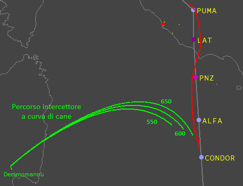
Mantenendo valida l'ipotesi dell'aereo guida, l'intercettore, anziché dirigersi sul CONDOR, poteva dirigersi direttamente verso il bersaglio, variando continuamente la prua secondo le indicazioni del ricevitore TACAN, ma il percorso avrebbe dato origine alla cosiddetta curva del cane, decisamente meno efficiente dell'intercettazione in linea retta.
La cartina mostra il percorso che avrebbe seguito l'intercettore per tre velocità al suolo: 550 kn, 600 kn e 650 kn.
La velocità di 650 kn porta l'intercettore a 14 nm dal bersaglio dopo averne percorse 213. La distanza finale sarebbe accettabile, ma la velocità è piuttosto elevata.
Il vero problema per l'intercettore è che non può sapere se si trova nel punto giusto col trascorrere del tempo. Usando un computer, è facilissimo e velocissimo calcolare la posizione corretta dell'intercettore in funzione della posizione del bersaglio, ma per i piloti dell'intercettore sarebbe stato praticamente impossibile, specialmente in quell'epoca.
Insomma, è senz'altro preferibile l'intercettazione in linea retta.
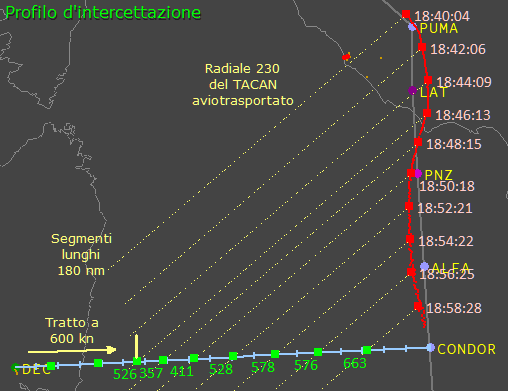
Per mantenere il corretto sincronismo tra intercettore e DC-9, bastava mantenere una prestabilita radiale del TACAN aviotrasportato come, ad esempio, la 230, rappresentata dalle linee tratteggiate. Quindi l'intercettore avrebbe dovuto variare la velocità per mantenere stabile il rilevamento dal TACAN aviotrasportato (e quindi dal DC-9).
I trattini lungo il segmento DEC - CONDOR sono distanti 10 nm l'uno dall'altro.
La variabilità della rotta e della velocità del bersaglio comporta una significativa variabilità anche della velocità che l'intercettore deve tenere (indicata in verde).
All'atto pratico, tuttavia, una volta iniziata la stabile ricezione del TACAN aviotrasportato, l'intercettore avrebbe mantenuto una radiale in lieve anticipo rispetto alla 230 pianificata (ad esempio la 226 o 227), mantenendo una velocità più regolare tra i 400 e i 500 kn.
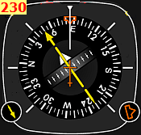
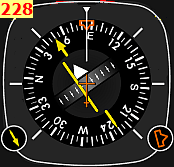
Lo strumento utilizzato durante l'intercettazione era simile a questo, chiamato
HSI.
L'immagine di sinistra (contrassegnata con "230") corrisponde all'intercettore esattamente nella posizione voluta, mentre l'altra immagine mostra l'indicazione che riceve il pilota quando è in leggero anticipo.
18:44 - Cimitero delle radioassistenze
Poco dopo il riporto del PUMA, l'IH870 si rende conto che tutte le radioassistenze che avrebbe dovuto usare non funzionano, ad eccezione di quelle per la partenza.
La situazione, già di per sé più unica che rara, è resa veramente unica dal fatto che quasi tutte le radioassistenze intorno al DC-9 funzionavano regolarmente; le eccezioni sono il VOR di Catania che comunque aveva l'NDB funzionante e il TACAN di Villafranca.
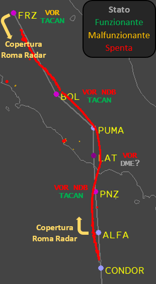
La cartina mostra lo stato delle radioassistenze ubicate lungo la rotta dell'IH870.
Salta subito all'occhio che i TACAN (radioassistenza militare) funzionano tutti, mentre i VOR e gli NDB non funzionano, con l'eccezione del VOR di Firenze, che era nella stranissima situazione di risultare ufficialmente funzionante anche se in realtà era malfunzionante, in quanto veniva ricevuto correttamente solo a breve distanza (30/35 nm), tanto che entrambi i voli Itavia 870 e 779 se ne sono lamentati.
La situazione di quella sera consentiva comunque l'utilizzo delle aerovie con le radioassistenze spente grazie alla copertura di Roma Radar, ma per avere ben chiara la situazione che si era venuta a creare, si rimanda alla pagina "
Stato delle radioassistenze".
18:55 - Presenza di aerei
La versione che prevede l'aereo guida è supportata da un’analisi statistica fatta sui tabulati del radar Marconi.
L'analisi sulla velocità del DC-9 calcolata dai tabulati di Roma (v. "Presenza del MiG-23 → 1) Analisi della velocità di volo") rende probabile la presenza di uno o più aerei interferenti con il ritorno radar del DC-9 durante gli ultimi minuti precedenti l’abbattimento, possibilità contemplata anche da alcuni periti.
L'interferenza inizia quando l'IH870 si trova ad una decina di chilometri a nord del punto ALFA.
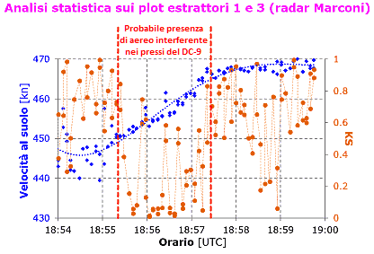
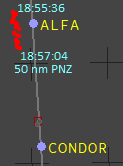
Dalle 18:55:36 alle 18:57:04 risulta probabile la presenza di traffico nei pressi del DC-9 che interferisce con i suoi ritorni radar.
Questo traffico interferente è compatibile con l'ipotesi che si sta facendo in merito ai due piccoli aerei che seguono il DC-9 ad una distanza compresa tra 500 m e 2 km.
Dopo delle 18:57, l'interferenza ha termine.
Data l'ipotesi qui formulata, è probabile che entrambi gli aerei in coda all'IH870 volassero ad una quota tale da non essere rilevati dai radar di Roma (15000/20000 ft), a prescindere dal fatto di essere "coperti" dal DC-9.
Tre o quattro minuti prima dell'abbattimento, l'aereo guida potrebbe essersi alzato (dando origine all'interferenza visibile nel grafico) per varie ragioni: verificare la quota di volo del DC-9 (i missili inerti dovevano avere la giusta rampa in salita), verificare la distanza da una radioassistenza lontana, trasmettere dati tramite il Tactical Data Link ad una stazione di terra o all'intercettore, ecc.
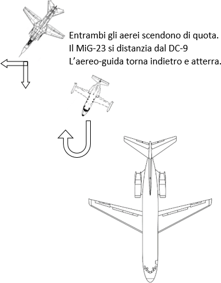
Alle 18:57 l'aereo guida non serve più; quindi scende di quota per non essere visto dai controllori di Roma Radar (dato che non ha più la "protezione" del DC-9) e se ne ritorna indietro per l'atterraggio (forse a Pratica).
Il MiG, pur continuando a seguire il DC-9, ha iniziato ad allontanarsene già da qualche minuto, scarrocciando verso ovest, mantenendo bene in vista le luci di navigazione del DC-9 (distanza che poteva essere 30/40 km).
Il MiG funge da
marker per l'intercettore, cioè segnala a quest'ultimo la posizione dalla quale iniziare le manovre per il corretto posizionamento rispetto all'IH870 prima del lancio dei missili.
18:58 - Plot a ovest
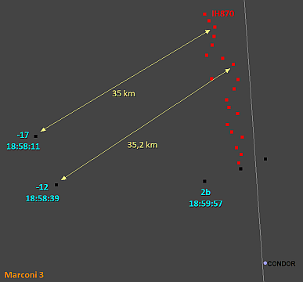
Alle 18:58:11 il radar Marconi rileva un plot a 35 km (circa 19 nm) dall'IH870.
Dopo circa 28 s ne compare un altro situato a sud del precedente a poco meno di 5 nm.
Questi due famosi plot saranno chiamati -17 e -12 dai periti; insieme al 2b potrebbero rappresentare il MiG che scende parallelamente all’IH870 e vira verso di esso, o potrebbero essere falsi plot.
Quello che si deve affermare su base oggettiva è che i due radar di Roma e quello di Marsala non mostrano niente intorno all’IH870 che possa essere associato con certezza ad un aereo (i plot certamente attribuibili ad un aereo si trovano a circa 60 nm dal DC-9 e rappresentano il volo ATI BM330 Napoli - Palermo).
Questo tuttavia, non può in alcun modo escludere la presenza di:
- altri aerei a meno di 2 km dal DC-9;
- altri aerei più piccoli e/o a quota più bassa nei paraggi del DC-9.
I motivi sono dettagliatamente spiegati nella pagina "RADAR e SIF" e "I radar «vedono» tutto".
Troppo spesso si legge ciò che viene scritto dai soliti creativi di Ustica che affermano l'assenza certa di aerei nei pressi del DC-9, poiché i radar non mostrano plot che possano essere associati ad un aereo.
Purtroppo per questi creativi, il principio di funzionamento dei radar non può essere modificato da nessuna fantasticheria, chiunque sia a pronunciarla.
È anche utile sottolineare che quella sera la probabilità che gli aerei potessero generare la scia di condensazione era praticamente nulla (v. "Stato delle radioassistenze → 4) Incrocio con altri aerei").
18:59 - L'abbattimento
L’intercettore si avvicina al bersaglio seguendo le indicazioni della strumentazione di bordo (ricevitore TACAN) fino a quando non inizia a vedere un aereo, il MiG-23, in posizione arretrata rispetto al DC-9. Il Sole al tramonto sta ancora illuminando bene la scena.
Ipotizzando il mantenimento del silenzio radio, se l’intercettore era un F-104S, questo deve determinare la rotta e la velocità del bersaglio per impostare i dati nel suo arcaico radar di tiro. Quindi vola in parallelo al DC-9 "tenendolo fermo", mantenendolo, cioè, ad un azimut costante e legge sugli strumenti la rotta e la velocità da caricare nel radar di tiro. Nel caso di F-4 ed F-15 ciò non serviva.
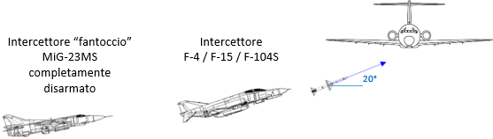
Mentre l’intercettore si avvicina a tutta manetta all’IH870 ad una quota di circa 15000/20000 ft, il MiG gli si accoda, facendo finta di essere lui il vero intercettore.
Dal momento che i missili dovevano salire con un angolo di circa 20° e che il lancio doveva avvenire a circa 10000 ft dal bersaglio, l'intercettore doveva lanciare da una quota più bassa di 3500 ft rispetto ai 26000 tenuti dal DC-9 (corrispondenti, quella sera, al livello di volo 250), quindi da circa 22500 ft.
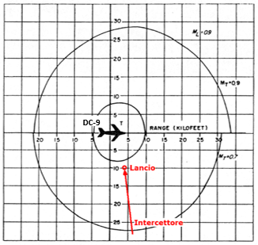
Alla distanza prestabilita dal bersaglio, l'intercettore inizia la richiamata e segue le indicazioni del radar di tiro per posizionarsi correttamente prima del lancio.
Circa 1 km prima della distanza minima di lancio, il pilota dell'intercettore preme il pulsante per lanciare (il computer dell'epoca richiedeva qualche secondo per l'effettivo lancio, dopo il comando del pilota).
Tutti i radar militari in zona, sia imbarcati che terrestri, registrano l’evento, inizializzando solo la traccia del MiG, rappresentata sullo schermo radar dai plot che seguono quelli del vero intercettore, evitando (ovviamente) d’inizializzare la traccia del vero intercettore che quindi non compare nella registrazione, facendo risultare che un aereo sconosciuto ha abbattuto lo sventurato DC-9 Itavia.
Dopo l'impatto dei due missili inerti, entrambi gli aerei, MiG-23 ed intercettore, passano sopra ai frammenti del DC-9 (probabilmente lasciando qualche plot nei radar di Roma) e l’intercettore se ne ritorna a Decimomannu, mentre il MiG si abbassa e procede verso est.
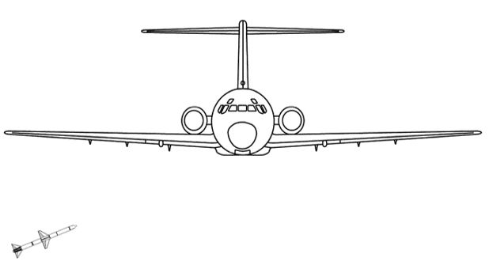
Il primo missile (che è a guida radar semiattiva) colpisce il DC-9 nel punto di massima riflettività radar: la zona del carrello principale, dove c'è l'enorme superficie riflettente dell'ala.
L'energia posseduta dal missile è tale (circa 20 MJ o 20 milioni di
joule) da imprimere all'aereo un'accelerazione verso l'alto sufficiente a superare il limite strutturale dell'ala.
Il missile potrebbe aver colpito la gamba sinistra del carrello principale, imprimendo una breve, ma violenta rotazione dell'aereo intorno all'asse longitudinale (esageratamente amplificata nell'animazione, per chiarezza) tanto da determinare la rottura della semiala sinistra (tutti i dettagli sono presenti nella pagina "
Abbattimento tramite missili inerti → Vincoli da soddisfare").
Il secondo missile (solitamente lanciato a brevissima distanza temporale dal primo) colpisce il DC-9 più avanti, tranciando le linee dell’alimentazione elettrica con le grosse alette e, quasi certamente, anche i comandi di volo (l’apertura alare del missile è superiore a 1 m ed è molto grande se confrontata con il diametro della fusoliera di circa 3,3 m).
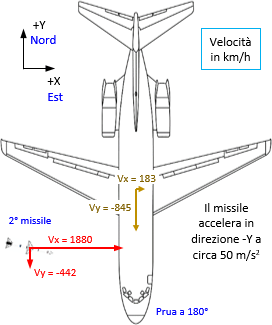
L’impatto del secondo missile avvenuto più verso la prua è perfettamente compatibile con l’accelerazione comandata dall’autopilota del missile che qualche istante prima d’impattare il DC-9 poteva valere circa 50 m/s
2. In altri termini, mentre il missile si avvicinava al DC-9 con velocità intorno ai 2000 km/h, accelerava anche verso destra, cioè verso la prua del DC-9, di 5 m/s ogni decimo di secondo; è una caratteristica della guida proporzionale, come quella dello Sparrow.
Successivamente all'impatto del secondo missile e alla rottura del troncone della semiala sinistra, l'aereo si ritrova con la struttura gravemente compromessa, i cui elementi di forza (come le ordinate che collegano l'ala alla fusoliera) possono cedere in qualunque momento e in modo imprevedibile.
Una possibile sequenza iniziale di eventi che porta il DC-9 al disastro potrebbe essere la seguente.
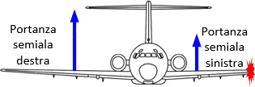
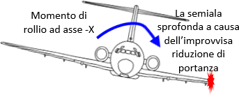
La perdita del troncone della semiala sinistra fa sprofondare la semiala a causa dell'improvvisa riduzione di portanza.
Ciò innesca una rotazione intorno all'asse longitudinale dell'aereo.
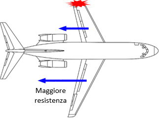
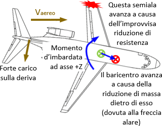
La minore resistenza della semiala sinistra la fa avanzare.
La rotazione dell'aereo intorno all'asse verticale espone la deriva al flusso d'aria e a notevole stress. La forza aerodinamica che si sviluppa indebolisce i collegamenti tra le ordinate di forza (ala e motori) e la struttura.
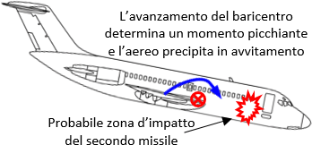
Il baricentro avanza nel momento stesso del distacco del troncone alare. Questo avanzamento del baricentro non può essere contrastato dai piloti, poiché eccessivo e, quasi certamente, i comandi di volo sono stati compromessi dai missili.
Il rollìo già innescato e questa picchiata determinano la fine del volo; l'aereo picchia sempre di più, con il conseguente aumento della velocità verticale, mentre ruota intorno all'asse longitudinale.
Durante la caduta, gli elementi strutturali, già compromessi dall'impatto dei missili, cedono definitivamente dando origine ai vari relitti che vanno a finire nelle zone dalle quali saranno recuperati molti anni dopo.
19:03 - Il finto inseguimento
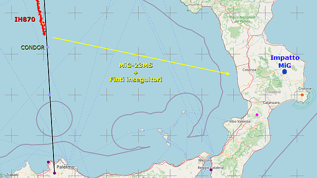
L'ipotesi pura e semplice è che dopo l’abbattimento scatta il finto inseguimento del MiG da parte di caccia NATO fino alla zona semidisabitata di Castelsilano (come pianificato).
Ipotizzando una velocità media rispetto al suolo (favorita dal vento in coda) di circa 550 kn, il gruppo percorre i 330 km (circa 178 nm) in una ventina di minuti, arrivando nella zona prestabilita intorno alle 19:20/19:25, dove il MiG si schianta per aver volutamente terminato il carburante; ecco il colpevole! Avrebbero detto tutti, con tanto di tabulati radar.
Ma qualcosa andò storto, perché il vero bersaglio di quella sera (volo con Gheddafi per Varsavia) fece dietro-front e non fu più possibile abbatterlo.
Ha così inizio l’opera d’insabbiamento e depistaggio che ci stiamo trascinando dietro da oltre 40 anni.
Center geodetic : 16.8, 39.275, .600 {E-lon(deg),Lat(deg),Alt(km)}
Target primary : Sun
********************************************
Date__(UT)__HR:MN Azi____(r-app)___Elev
********************************************
1980-Jun-27 19:15 Nm 310.213764 -8.290776
1980-Jun-27 19:20 Nm 311.108133 -9.024825
1980-Jun-27 19:25 Nm 312.012782 -9.748889
1980-Jun-27 19:30 Nm 312.927924 -10.462670
La visibilità del MiG durante le ultime fasi del volo può essere stimata considerando che il sole era già tramontato da circa 1 ora e si trovava 8/10 gradi sotto l'orizzonte, per cui al suolo era completamente notte, ma il cielo verso ovest mostrava ancora un certo chiarore (v.
NASA/JPL Horizons System).
La luna era piena, ma piuttosto bassa sull'orizzonte (appena 16/17 gradi sopra l'orizzonte) e si trovava a sud-est (dalla parte opposta al sole).
Un ipotetico osservatore che avesse avvistato l'aereo in volo poco prima dell'impatto avrebbe visto una sagoma del tutto indistinta se osservava guardando ad est (cielo quasi nero) o una sagoma meglio definita, ma completamente nera, se, invece, guardava verso ovest.